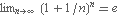
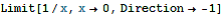
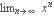

Mathematica 基础教程
- 视频教程
- 基础操作
- 微积分
Mathematica's Manipulate Command
How to | Compute a Limit
Even simple-looking limits are sometimes quite complicated to compute. Mathematica provides functionality to evaluate several kinds of limits.
Use Limit to calculate limits; the first argument is the function and the second has the form . You can expect that :
In[1]:= |
Out[1]= |
|
You may want to calculate limits from the right or left. For example, although is not well defined, Mathematica defaults to limits from the right:
In[2]:= |
Out[2]= |
|||
In[3]:= |
 |
||
Out[3]= |
|
In[4]:= |
Out[4]= |
If you know something about a parameter in a limit, use the Assumptions option to include this information.
Suppose you want to calculate . Without knowing more, the limit cannot be calculated:
| In[5]:= |
Out[5]= |
If, however, you know that , then you can compute the answer:
In[6]:= |
Out[6]= |